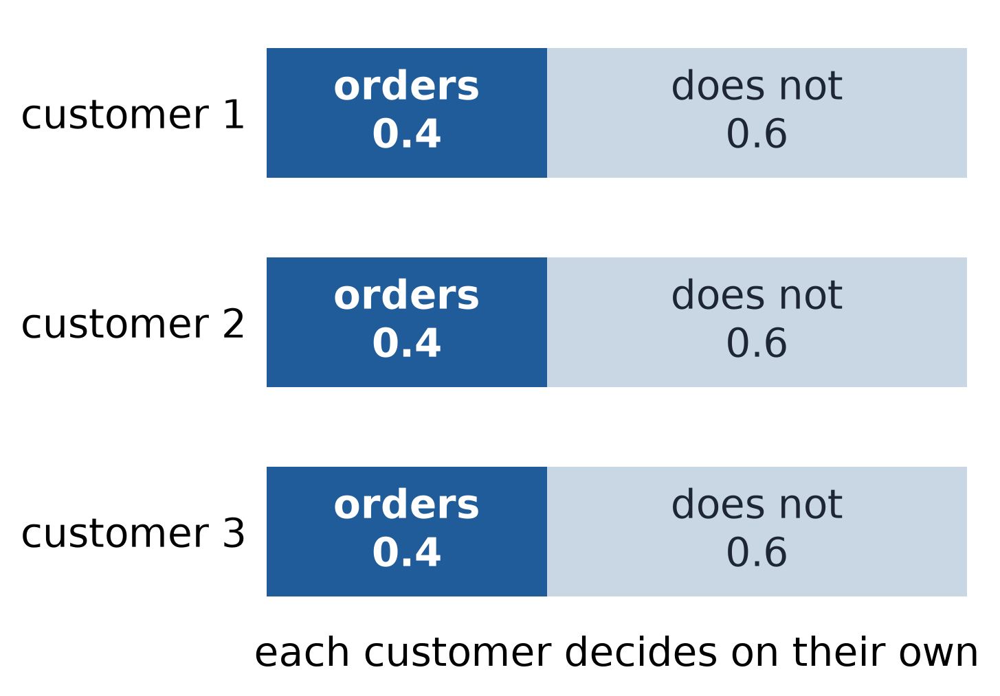
Discrete random variables
Lecture 3 · Probability Theory and Mathematical Statistics
2026-11-18
Marat’s Saturday morning
\[ \newcommand{\E}{\mathbb{E}} \newcommand{\Var}{\operatorname{Var}} \newcommand{\Cov}{\operatorname{Cov}} \newcommand{\Corr}{\operatorname{Corr}} \newcommand{\Prob}{\mathbb{P}} \newcommand{\R}{\mathbb{R}} \]
Marat runs an optician’s shop on Bauman Street in Kazan. This Saturday, 3 customers come for a free eye test.
Each orders glasses with probability 0.4, and they decide independently. A pair earns 2,000 rubles. Each free test costs 500 rubles.
Marat wants two numbers. How many pairs should he expect to sell? How far from that does a typical Saturday land?
Both are about one unknown number: how many of the 3 order.
Random variable Def 3.1, Ex 3.1
A random variable is a rule that gives a number to every outcome: a function from \(\Omega\) to the real numbers. Names: capital letters \(X\), \(Y\), \(Z\).
A morning is three letters, O = orders, N = does not. \(2\cdot2\cdot2=8\) outcomes (product rule, Thm 1.3).
\(X\) counts the O’s: values 0, 1, 2, 3. Three mornings give \(X=2\). \(X\) keeps how many, not who.
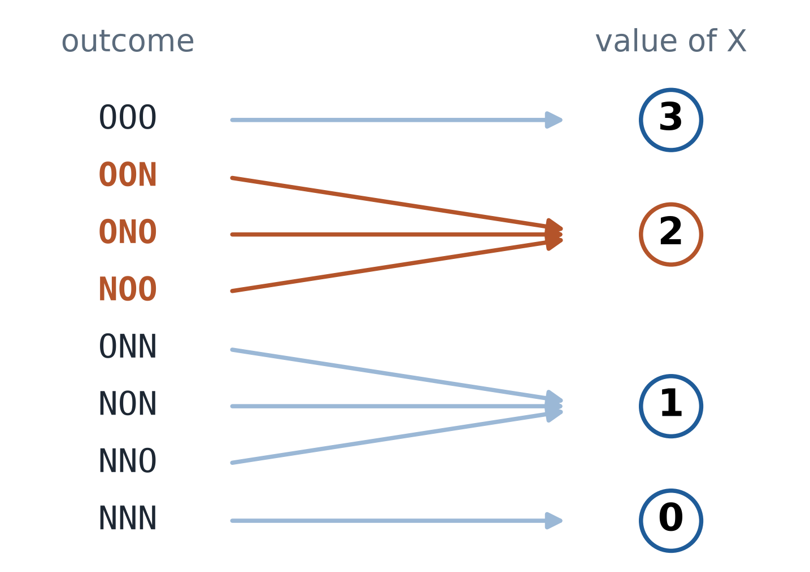
Marat’s morning as a tree Fig 3.1
Each branch: O with 0.4, N with 0.6; multiply along a path. Orange: the three mornings with \(X=2\).
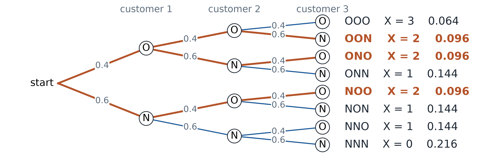
How to read \(X\), \(x\) and \(\{X=2\}\) Sec 3.1
| Write | Say | For Marat |
|---|---|---|
| \(X\) | “big X” | the number of orders on Saturday, not known yet |
| \(x\) | “small x” | a possible value: 0, 1, 2 or 3 |
| \(\{X=2\}\) | “the event that X equals 2” | \(\{\text{OON},\text{ONO},\text{NOO}\}\), the orange leaves |
| \(\{X\le 1\}\) | “the event that X is at most 1” | \(\{\text{NNN},\text{ONN},\text{NON},\text{NNO}\}\) |
| \(\Prob(X=2)\) | “the probability that X equals 2” | short for \(\Prob(\{X=2\})\) |
\(\{X=2\}\) is a set of outcomes, so it is an event (Lecture 1). Inside \(\Prob\) we drop the curly brackets.
Probability mass function Def 3.2
\(X\) is discrete if its values can be listed: \(x_1, x_2, x_3,\dots\) The probability mass function (PMF) of \(X\) is \(p(x)=\Prob(X=x)\), for each value \(x\) of \(X\).
How to read \(p(x)\)
\(p(x)\) reads “p of x”: a function, a number in, a probability out. It is not \(p\) times \(x\).
\(p(2)\), “p of two”, is \(\Prob(X=2)\). We find \(p(2)=0.288\) in a moment.
Marat’s \(X\) has 4 values: discrete. Lecture 4: a waiting time is not.
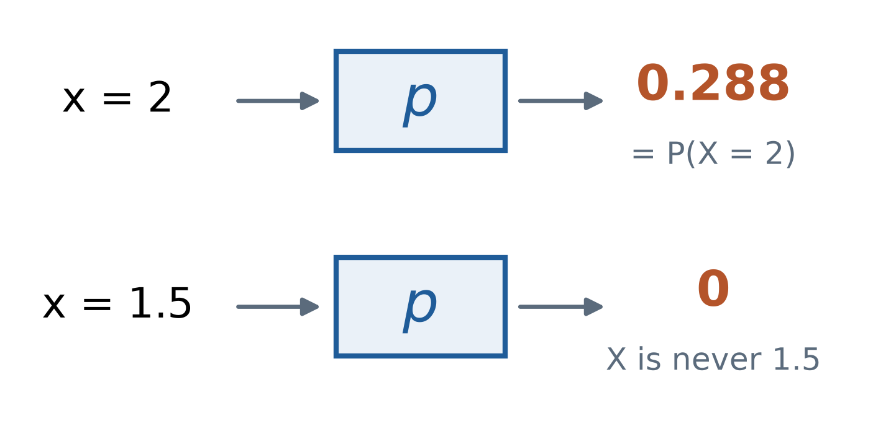
Marat’s PMF: one path Ex 3.2
Given: 3 customers; each orders (O) with 0.4, does not (N) with 0.6; independent; \(X\) = number who order
Guess first: which is most likely, 0, 1, 2 or 3 orders?
Take one path, say ONN. The customers are independent (Def 2.3), so multiply along the path: \[\Prob(\text{ONN})=0.4\cdot0.6\cdot0.6=0.144\]
NON and NNO have the same three factors in another order, so each of them is also 0.144.
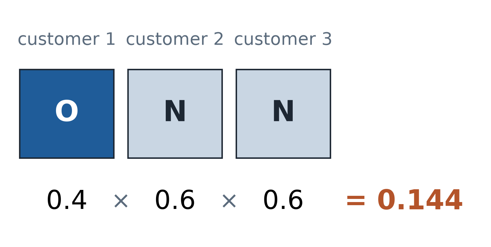
Marat’s PMF: collect the paths Ex 3.2
Given: O with 0.4, N with 0.6, independent; a path’s probability is the product along it
Different paths are mutually exclusive, so their probabilities add.
- \(X=0\): only NNN. \(\quad p(0)=0.6\cdot0.6\cdot0.6=0.216\)
- \(X=1\): ONN, NON, NNO, each \(0.4\cdot0.6\cdot0.6=0.144\). \(\quad p(1)=3\cdot0.144=0.432\)
- \(X=2\): OON, ONO, NOO, each \(0.4\cdot0.4\cdot0.6=0.096\). \(\quad p(2)=3\cdot0.096=0.288\)
- \(X=3\): only OOO. \(\quad p(3)=0.4\cdot0.4\cdot0.4=0.064\)
Check: \(0.216+0.432+0.288+0.064=\) 1. Nothing is missing.
Marat’s PMF as a bar chart Ex 3.2, Fig 3.2
| \(x\) | 0 | 1 | 2 | 3 |
|---|---|---|---|---|
| \(p(x)\) | 0.216 | 0.432 | 0.288 | 0.064 |
The most likely value is 1, not 0.
Each customer is more likely to say no than yes. But there is only one way to get three noes, and three ways to get exactly one yes.
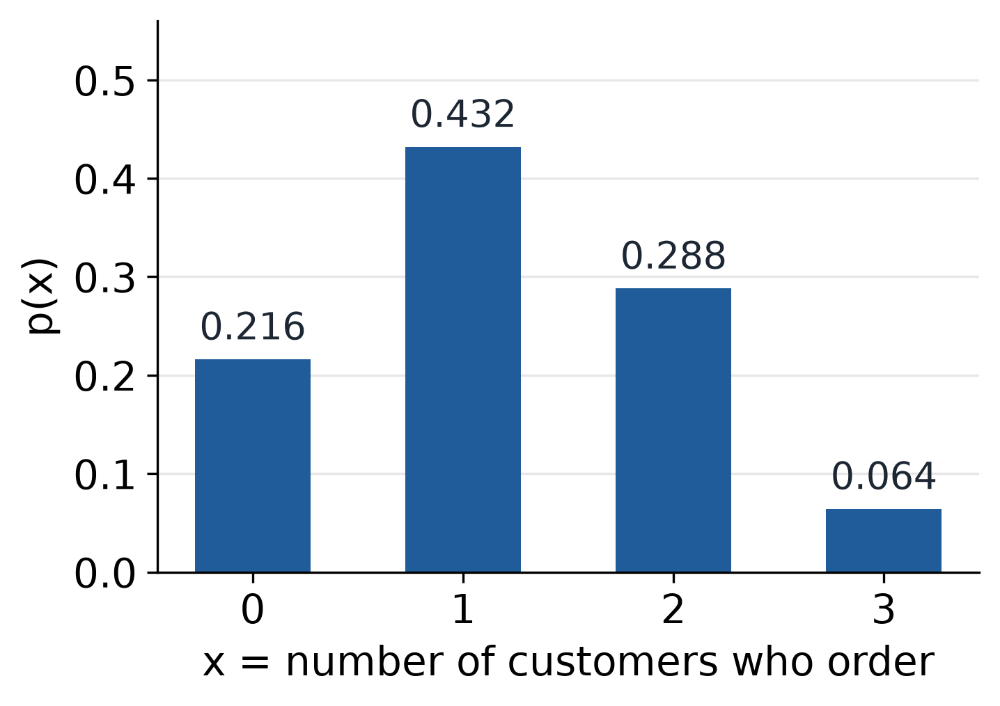
How to read the summation sign \(\sum\) Sec 3.2
\(\sum\) is the Greek capital letter sigma, an S for “sum”. It means “add up”. You met it in the law of total probability (Eq 2.2).
\[\sum_{i=1}^{4} p(x_i)\]
Say: “the sum of p of x i, for i from 1 to 4”.
| Part | What it does |
|---|---|
| \(i\) | the index, a counter |
| \(i=1\) under the sign | where \(i\) starts |
| \(4\) on top | where \(i\) stops |
| \(p(x_i)\) | what we add, once for each \(i\) |
Put \(i=1\), then \(i=2\), \(i=3\), \(i=4\) into \(p(x_i)\), and add the four results.
\(x_1,\dots,x_4\): the values in a list Sec 3.2
\(x_1, x_2, x_3, x_4\) read “x one, x two, …”. The small number is a position in the list, not the value.
| \(i\) (position) | 1 | 2 | 3 | 4 |
|---|---|---|---|---|
| \(x_i\) (value) | 0 | 1 | 2 | 3 |
| \(p(x_i)\) | 0.216 | 0.432 | 0.288 | 0.064 |
\[ \begin{aligned} \sum_{i=1}^{4} p(x_i)&=p(x_1)+p(x_2)+p(x_3)+p(x_4)=p(0)+p(1)+p(2)+p(3)\\ &=0.216+0.432+0.288+0.064=1 \end{aligned} \]
When the sum runs over all values of \(X\), we write just \(\sum_i\).
Properties of a PMF Thm 3.1
Let \(X\) be discrete with values \(x_1, x_2,\dots\) and PMF \(p\). Then
- \(p(x_i)\ge 0\) for every \(i\);
- \(\sum_i p(x_i)=1\).
Each outcome gives \(X\) one value, so the events \(\{X=x_i\}\) form a partition of \(\Omega\) (Def 1.3). Their probabilities add up to \(\Prob(\Omega)=1\).
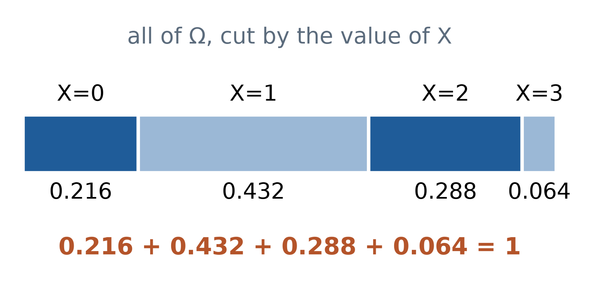
In practice it is a check: if your table does not add up to 1, a path is missing or counted twice.
Cumulative distribution function Def 3.3
The cumulative distribution function (CDF) of \(X\) is \(F(x)=\Prob(X\le x)\), for every real number \(x\).
How to read \(F(x)\)
\(F(x)\) reads “F of x”: a number in, a probability out. \(F(2)=\Prob(X\le 2)\) reads “the probability that \(X\) is at most 2”.
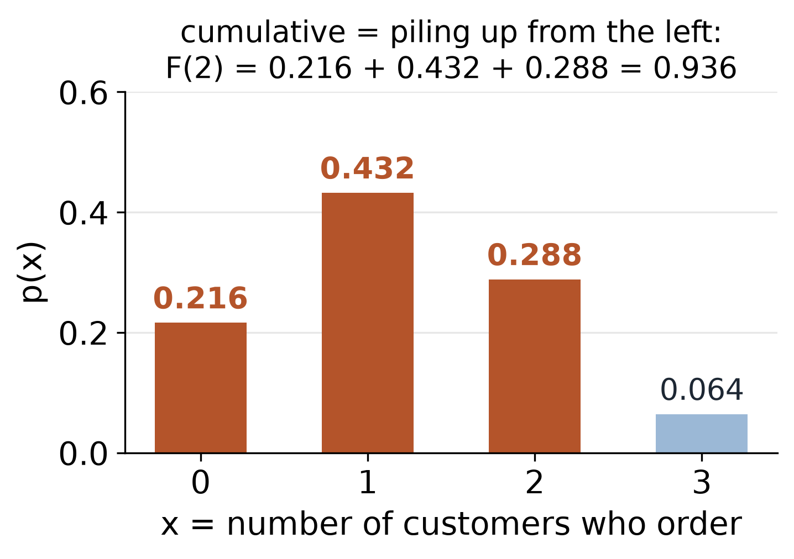
How to read \(\le\) and \(<\) Sec 3.3
Given: Marat’s PMF \(p(0)=0.216\), \(p(1)=0.432\), \(p(2)=0.288\), \(p(3)=0.064\)
| Write | Say |
|---|---|
| \(\le\) | “less than or equal to”, “at most” |
| \(<\) | “less than”, “strictly less than” |
\(X\le1\) means \(X=0\) or \(X=1\):
\(\Prob(X\le1)=0.216+0.432=\) 0.648
\(X<1\) means \(X=0\) only:
\(\Prob(X<1)=\) 0.216
The two signs differ whenever the boundary (here 1) is a value \(X\) can take.
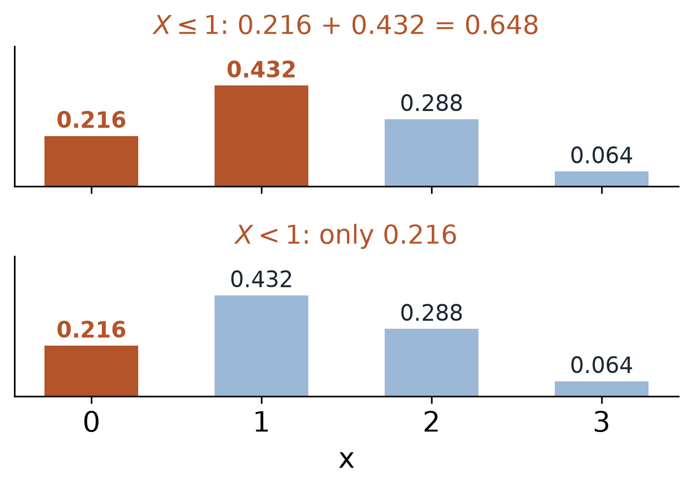
Marat’s CDF: add from the left Ex 3.3
Given: \(p(0)=0.216\), \(p(1)=0.432\), \(p(2)=0.288\), \(p(3)=0.064\)
Add the probabilities from the left:
\(F(0)=0.216\)
\(F(1)=0.216+0.432=0.648\)
\(F(2)=0.648+0.288=0.936\)
\(F(3)=0.936+0.064=1\)
Between the values nothing new is added.
\(F(1.5)=\Prob(X\le1.5)\). The values at most 1.5 are 0 and 1, so \(F(1.5)=0.216+0.432=\) 0.648, the same as \(F(1)\).
\(F(-1)=0\), because \(X\) is never negative.
\(F(5)=1\), because \(X\) is always at most 5.
The CDF is a staircase Ex 3.3, Fig 3.3
\[ F(x)=\begin{cases} 0, & x<0,\\ 0.216, & 0\le x<1,\\ 0.648, & 1\le x<2,\\ 0.936, & 2\le x<3,\\ 1, & x\ge 3. \end{cases} \]
Flat between the values of \(X\). At 0, 1, 2, 3 it jumps by \(p(x)\).
The filled dot is the value of \(F\) at the jump. The dashed line reads off \(F(1.5)=0.648\).
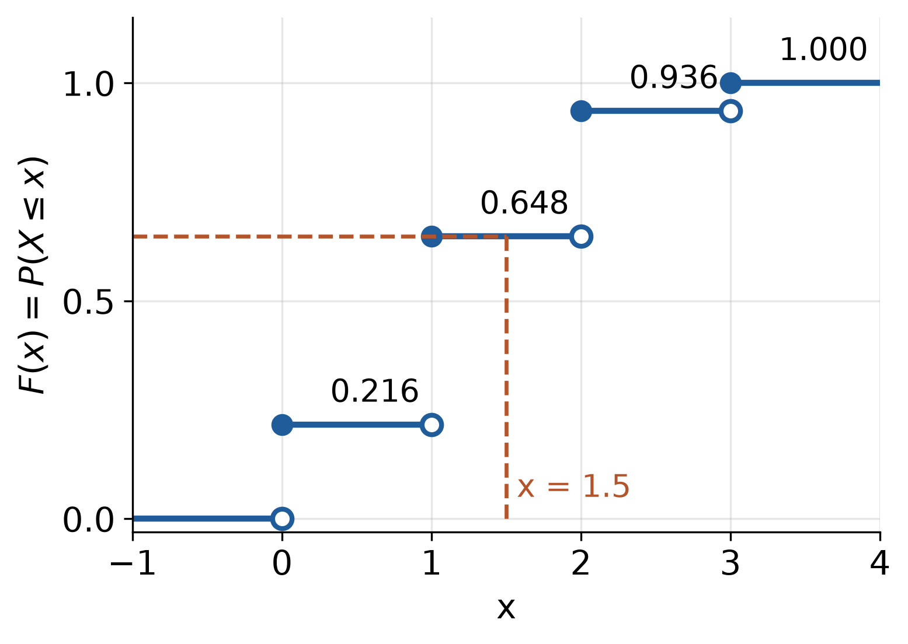
Interval rule Eq 3.1
Given: \(F(1)=0.648\), \(F(3)=1\); \(p(2)=0.288\), \(p(3)=0.064\)
For \(a<b\):
\(\Prob(a<X\le b)=F(b)-F(a)\)
\(\{X\le b\}\) splits into \(\{X\le a\}\) and \(\{a<X\le b\}\), mutually exclusive. So \(F(b)=F(a)+\Prob(a<X\le b)\).
Marat, 2 or 3 customers order: \(\Prob(1<X\le3)=F(3)-F(1)=1-0.648=\) 0.352
Check: \(p(2)+p(3)=0.288+0.064=0.352\).
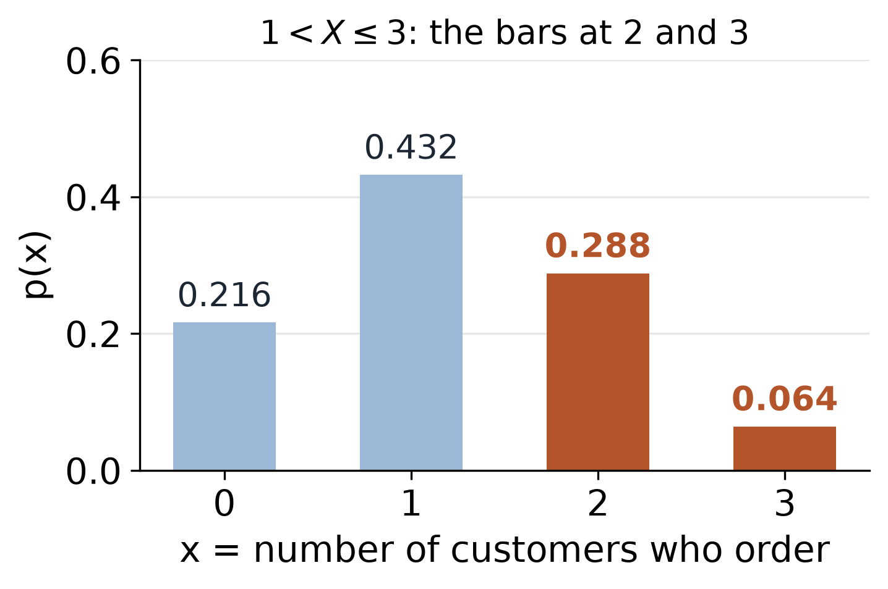
Pitfall: is the boundary included? Eq 3.1
Given: \(p(0)=0.216\), \(p(1)=0.432\), \(p(2)=0.288\), \(p(3)=0.064\); \(F(0)=0.216\), \(F(1)=0.648\), \(F(3)=1\)
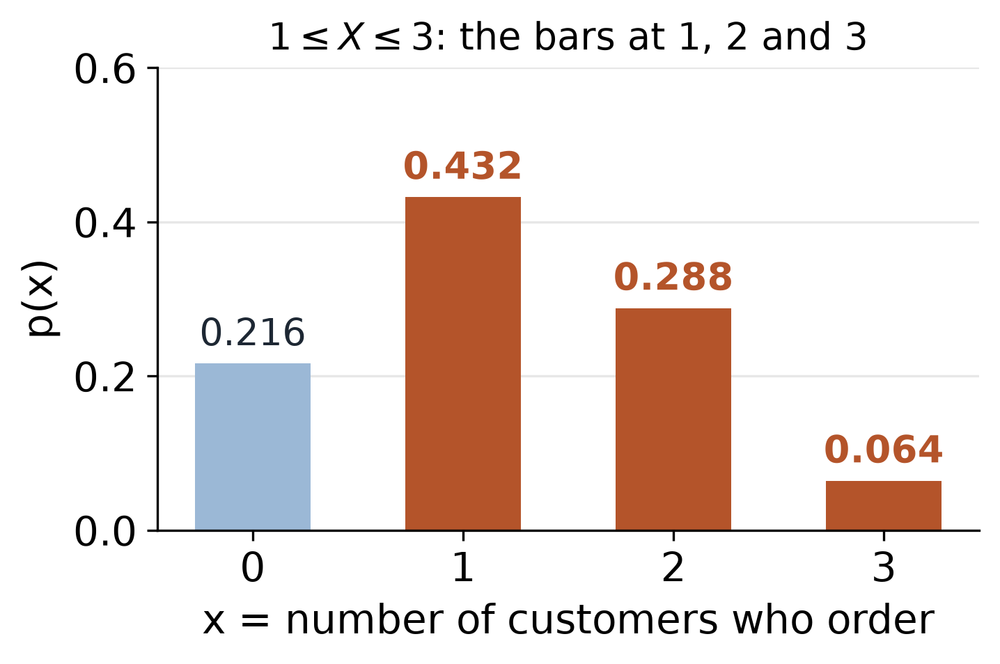
Wrong. \(\Prob(1\le X\le3)=F(3)-F(1)=0.352\)
Right. The event also contains \(X=1\): \[ \begin{aligned} \Prob(1\le X\le3)&=F(3)-F(0)\\ &=1-0.216=0.784 \end{aligned} \]
Eq 3.1 has \(<\) on the left, \(\le\) on the right. Always ask: is the boundary value included?
Your turn: cancellations in Suzdal Exercise 1
A guesthouse in Suzdal gets \(X\) late cancellations per weekend:
| \(x\) | 0 | 1 | 2 |
|---|---|---|---|
| \(\Prob(X=x)\) | 0.5 | 0.3 | \(c\) |
No other values. Find \(c\), \(F(1.5)\) and \(\Prob(X<1)\).
\(c=1-0.5-0.3=\) 0.2 (Thm 3.1)
\(F(1.5)=\Prob(X\le1.5)=0.5+0.3=\) 0.8
\(\Prob(X<1)=\Prob(X=0)=\) 0.5
Break
Back in 10 minutes.
Expected value Def 3.4
Given: Marat, 3 customers, 0.4 each, independent; \(p(0)=0.216\), \(p(1)=0.432\), \(p(2)=0.288\), \(p(3)=0.064\)
The expected value (also expectation or mean) of a discrete \(X\) with values \(x_1,x_2,\dots\) and PMF \(p\) is
\(\displaystyle\E[X]=\sum_i x_i\,p(x_i)\).
We also write \(\mu\) for \(\E[X]\).
How to read \(\E[X]\) and \(\mu\)
\(\E[X]\) reads “E of X”, the expected value of X. \(\E\) is an operation done to \(X\), not a number times \(X\).
\(\mu\), the Greek letter mu, said “myoo”, is the same number as \(\E[X]\).
In words: multiply each value by its probability, then add. For Marat: \[\E[X]=0\cdot p(0)+1\cdot p(1)+2\cdot p(2)+3\cdot p(3)\]
How many pairs Marat should expect Ex 3.4
Given: \(p(0)=0.216\), \(p(1)=0.432\), \(p(2)=0.288\), \(p(3)=0.064\)
Multiply each value by its probability:
\[ \begin{aligned} \E[X]&=0\cdot0.216+1\cdot0.432\\ &\quad+2\cdot0.288+3\cdot0.064 \end{aligned} \]
\[=0+0.432+0.576+0.192=1.2\]
Marat should expect 1.2 pairs per Saturday morning.
| \(x\) | \(p(x)\) | \(x\cdot p(x)\) |
|---|---|---|
| 0 | 0.216 | 0 |
| 1 | 0.432 | 0.432 |
| 2 | 0.288 | 0.576 |
| 3 | 0.064 | 0.192 |
| sum | 1.2 |
What 1.2 means Sec 3.4
Given: \(p(0)=0.216\), \(p(1)=0.432\), \(p(2)=0.288\), \(p(3)=0.064\); \(\E[X]=1.2\)
A weighted average. The plain average of 0, 1, 2, 3 is 1.5. But 3 is rare (0.064) and 0 is common (0.216), and the weights pull the mean down to 1.2.
A long-run average. In 1,000 such Saturdays, about 216 have no order, 432 one, 288 two and 64 three: \(0\cdot216+1\cdot432+2\cdot288+3\cdot64=1{,}200\) pairs, 1.2 per Saturday.
“Expected” is not “most likely” (that is 1). Marat will never sell 1.2 pairs.
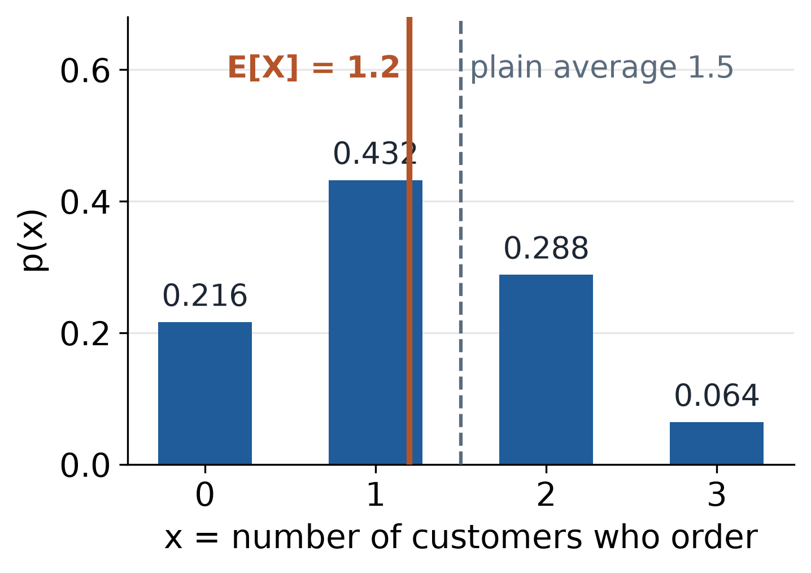
Expected value of \(g(X)\) Eq 3.2
Given: \(p(0)=0.216\), \(p(1)=0.432\), \(p(2)=0.288\), \(p(3)=0.064\)
For any function \(g\): \(\displaystyle \E[g(X)]=\sum_i g(x_i)\,p(x_i)\)
Compute the new quantity from each value of \(X\), weight it by the probability of that value, add. The reason: \(g(X)\) takes the value \(g(x_i)\) exactly when \(X=x_i\).
With \(g(x)=x^2\):
| \(x\) | 0 | 1 | 2 | 3 |
|---|---|---|---|---|
| \(x^2\) | 0 | 1 | 4 | 9 |
| \(p(x)\) | 0.216 | 0.432 | 0.288 | 0.064 |
\[ \begin{aligned} \E[X^2]&=0\cdot0.216+1\cdot0.432\\ &\quad+4\cdot0.288+9\cdot0.064\\ &=0.432+1.152+0.576=2.16 \end{aligned} \]
How to read squares, square roots and \(\sigma\) Sec 3.5
| Write | Say | For Marat, \(\mu=1.2\) |
|---|---|---|
| \(X^2\) | “X squared” | if \(X=2\), then \(X^2=4\) |
| \((X-\mu)^2\) | “X minus mu, all squared”: brackets first, then square | if \(X=0\): \((0-1.2)^2=(-1.2)^2=1.44\) |
| \(\sqrt{0.72}\) | “the square root of 0.72” | \(\approx0.85\), because \(0.85^2\approx0.72\) |
| \(\sigma\), \(\sigma^2\) | “sigma”, “sigma squared” | the standard deviation and the variance |
Units. \(X\) is in pairs of glasses, and so is \(X-\mu\). Then \((X-\mu)^2\) is in “pairs squared”, which means nothing to anyone. The square root brings us back to pairs.
Variance and standard deviation Def 3.5
With \(\mu=\E[X]\), the variance of \(X\) is \[ \begin{aligned} \Var(X)&=\E\big[(X-\mu)^2\big]\\ &=\sum_i (x_i-\mu)^2\,p(x_i). \end{aligned} \] Standard deviation: \(\sigma=\operatorname{SD}(X)=\sqrt{\Var(X)}\).
Why squares: plain deviations cancel on average. Squares make every deviation count, big ones much more.
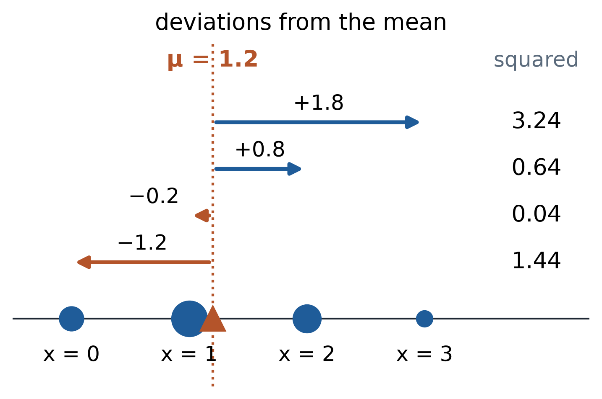
Marat’s variance by the definition Ex 3.5
Given: \(p(0)=0.216\), \(p(1)=0.432\), \(p(2)=0.288\), \(p(3)=0.064\); \(\mu=1.2\)
One row per value: subtract 1.2, square, multiply by \(p(x)\).
| \(x\) | \(x-1.2\) | \((x-1.2)^2\) | \(p(x)\) | \((x-1.2)^2\,p(x)\) |
|---|---|---|---|---|
| 0 | \(-1.2\) | 1.44 | 0.216 | 0.31104 |
| 1 | \(-0.2\) | 0.04 | 0.432 | 0.01728 |
| 2 | 0.8 | 0.64 | 0.288 | 0.18432 |
| 3 | 1.8 | 3.24 | 0.064 | 0.20736 |
Add the last column: \[\Var(X)=0.31104+0.01728+0.18432+0.20736=0.72\]
Shortcut formula for the variance Thm 3.2, Ex 3.5
Given: \(\E[X^2]=2.16\) (from Eq 3.2); \(\mu=\E[X]=1.2\)
\[\Var(X)=\E[X^2]-\mu^2\]
Idea: expand the square. Proof: see the book, Section 3.5.
\[ \begin{aligned} \Var(X)&=2.16-1.2^2\\ &=2.16-1.44=0.72 \end{aligned} \]
\(\sigma=\sqrt{0.72}\approx\) 0.85 pairs. Same 0.72 as the table.
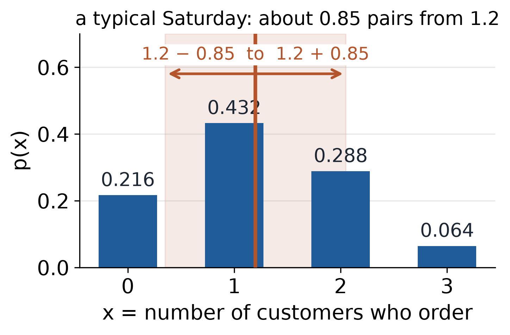
Pitfall: \(\E[X^2]\) is not \((\E[X])^2\) Thm 3.2
Given: \(\E[X^2]=2.16\); \(\E[X]=1.2\)
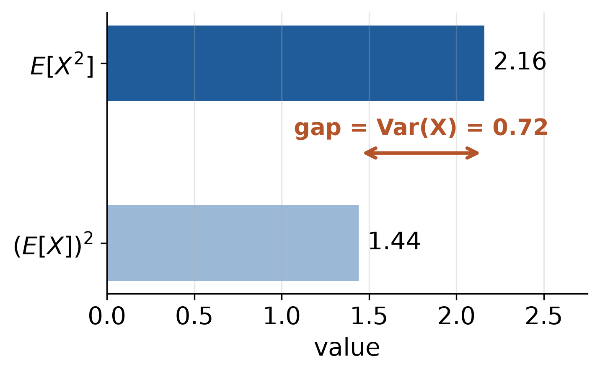
Wrong. \(\E[X^2]=(\E[X])^2=1.44\)
Right. \(\E[X^2]=2.16\), \((\E[X])^2=1.44\). The gap is the variance: \(0.72\).
The gap is never negative. If your variance comes out negative, you subtracted the wrong way round.
Your turn: Suzdal, mean and variance Exercise 1
Late cancellations \(X\) per weekend at the Suzdal guesthouse:
| \(x\) | 0 | 1 | 2 |
|---|---|---|---|
| \(\Prob(X=x)\) | 0.5 | 0.3 | 0.2 |
Find \(\E[X]\) and \(\Var(X)\). Use the shortcut.
\(\E[X]=0\cdot0.5+1\cdot0.3+2\cdot0.2=\) 0.7
\(\E[X^2]=0\cdot0.5+1\cdot0.3+4\cdot0.2=1.1\)
\(\Var(X)=1.1-0.7^2=1.1-0.49=\) 0.61
Marat thinks in rubles Sec 3.6
Given: 2,000 rubles per pair; 3 free tests at 500 rubles; \(p(0)=0.216\), \(p(1)=0.432\), \(p(2)=0.288\), \(p(3)=0.064\)
The three tests cost \(3\cdot500=1{,}500\) rubles whatever happens. Marat’s profit for the morning, in rubles: \[Y=2000X-1500\]
| \(x\) | 0 | 1 | 2 | 3 |
|---|---|---|---|---|
| profit \(y=2000x-1500\) | \(-1{,}500\) | 500 | 2,500 | 4,500 |
| probability | 0.216 | 0.432 | 0.288 | 0.064 |
Same probabilities, new values. The next theorem gets the mean and variance of \(Y\) straight from \(\E[X]\) and \(\Var(X)\).
Expectation and variance of \(aX+b\) Thm 3.3
Let \(a\) and \(b\) be numbers. Then \[ \begin{aligned} \E[aX+b]&=a\,\E[X]+b,\\ \Var(aX+b)&=a^2\Var(X),\\ \operatorname{SD}(aX+b)&=|a|\operatorname{SD}(X). \end{aligned} \]
Idea: the deviation of \(aX+b\) from its mean is \(a(X-\mu)\). The \(b\) is gone, and squaring turns \(a\) into \(a^2\). Proof: see the book, Section 3.6.
Lecture 2: \(|B|\) around a set was its number of elements. Around a number the bars mean absolute value.
How to read \(|a|\)
\(|a|\), “the absolute value of a”: \(a\) without its sign.
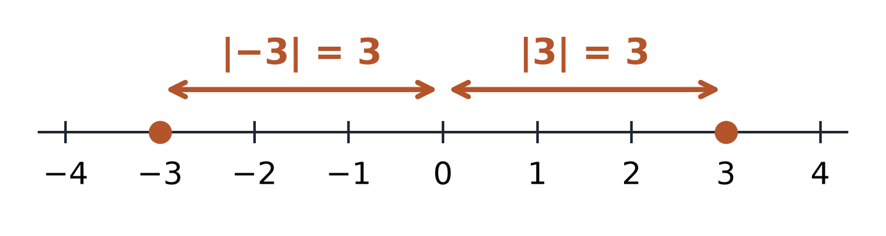
\(\operatorname{SD}(-X)=|-1|\cdot\operatorname{SD}(X)=\operatorname{SD}(X)\)
Marat’s profit in rubles Ex 3.6
Given: \(Y=2000X-1500\) rubles; \(\E[X]=1.2\); \(\Var(X)=0.72\); \(\operatorname{SD}(X)=\sqrt{0.72}\approx0.85\)
Here \(a=2000\) and \(b=-1500\). By Thm 3.3:
\[\E[Y]=2000\cdot1.2-1500=2400-1500=900\]
\[\Var(Y)=2000^2\cdot0.72=4{,}000{,}000\cdot0.72=2{,}880{,}000\]
\[\operatorname{SD}(Y)=2000\cdot\sqrt{0.72}\approx1{,}697\]
Expected profit 900 rubles, standard deviation about 1,697 rubles.
What the profit numbers say Ex 3.6
Given: \(\E[Y]=900\); \(\Var(Y)=2{,}880{,}000\); \(\operatorname{SD}(Y)\approx1{,}697\); bars: each profit and its probability
The variance, 2,880,000, is in “rubles squared”, a number nobody can picture. Report the standard deviation.
The swing (1,697) is almost twice the mean (900).
About one Saturday in five (probability 0.216, no orders) is a loss of 1,500 rubles.
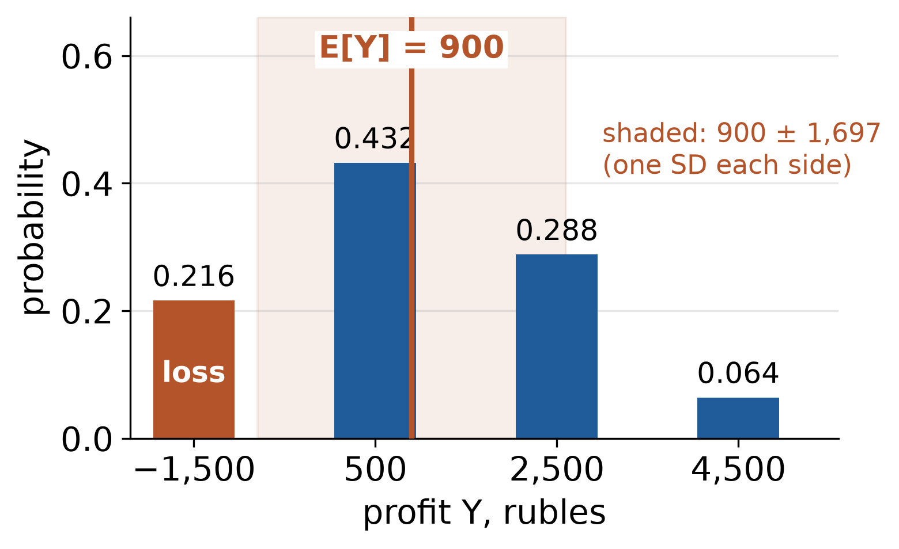
Pitfall: \(b\) drops out, \(a\) is squared Thm 3.3
Given: \(Y=2000X-1500\); \(\Var(X)=0.72\)
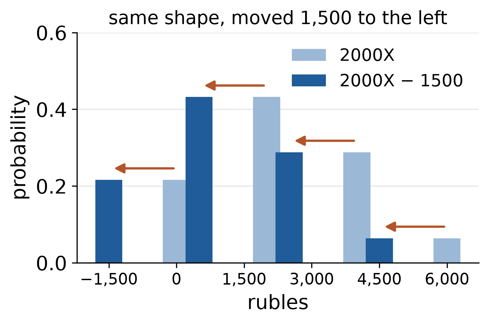
Wrong. \(\Var(Y)=2000\cdot0.72-1500\)
Right. \(\Var(Y)=2000^2\cdot0.72=2{,}880{,}000\)
The 1,500 rubles shift every profit by the same amount: the mean moves, the spread does not.
\(a\) is squared, so its sign goes too: \(\Var(-X)=\Var(X)\), never \(-\Var(X)\).
Bernoulli distribution Def 3.6
\(X\) has the Bernoulli distribution with parameter \(p\), \(0\le p\le1\), if it takes only two values: \(\Prob(X=1)=p\), \(\Prob(X=0)=1-p\). The value 1 is a success, 0 a failure.
A parameter picks one member of a family, such as Bernoulli(0.4) or Bernoulli(0.9). “Success” is just what we count, even a default.
\(\E[X]=0\cdot(1-p)+1\cdot p=p\), \(\;\E[X^2]=p\), so \(\Var(X)=p-p^2=p(1-p)\).
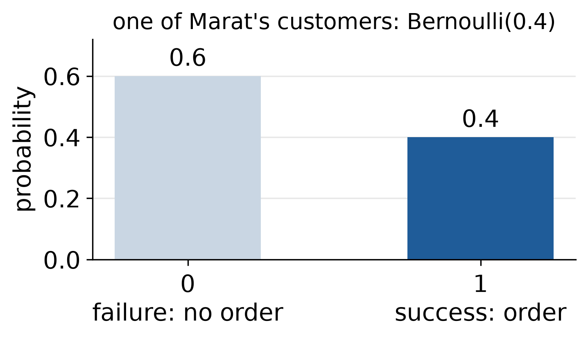
Marat’s customer: mean 0.4, variance \(0.4\cdot0.6=\) 0.24.
Binomial distribution Def 3.7, Eq 3.3
Repeat a trial \(n\) times under the four conditions below, and let \(X\) be the number of successes. Then \(X\) has the binomial distribution, \(X\sim\operatorname{Bin}(n,p)\), and \[\Prob(X=k)=\binom{n}{k}p^k(1-p)^{n-k},\qquad k=0,1,\dots,n.\]
| Condition | Marat |
|---|---|
| 1. \(n\) is fixed in advance | 3 customers have booked, \(n=3\) |
| 2. each trial: success or failure | orders (O) or does not (N) |
| 3. the same \(p\) in every trial | 0.4 for each customer |
| 4. the trials are independent | they don’t know each other |
How to read \(X\sim\operatorname{Bin}(n,p)\) and \(p^k(1-p)^{n-k}\) Sec 3.7
| Write | Say, and what it means |
|---|---|
| \(\sim\) (tilde) | “has the distribution” |
| \(X\sim\operatorname{Bin}(3,\,0.4)\) | “X has the binomial distribution with \(n=3\), \(p=0.4\)” |
| \(k\) | how many successes we ask about |
| \(p^k\) | \(p\) times itself \(k\) times; \(p^0=1\) |
Marat, \(k=1\): \(\;p^1(1-p)^{3-1}=0.4\cdot0.6^2=0.4\cdot0.36=0.144\), one path such as ONN.
\(\binom31=3\) such paths (ONN, NON, NNO): \(\;\Prob(X=1)=3\cdot0.144=\) 0.432
A Bernoulli(\(p\)) variable is \(\operatorname{Bin}(1,p)\).
Why the binomial formula works Eq 3.3
A sequence of \(n\) trials with \(k\) successes and \(n-k\) failures has probability \(p^k(1-p)^{n-k}\), by independence (Def 2.3).
The number of such sequences is the number of ways to choose the \(k\) positions of the successes: \(\binom nk\) (Def 1.8).
Different sequences are mutually exclusive, so we add \(\binom nk\) equal probabilities.
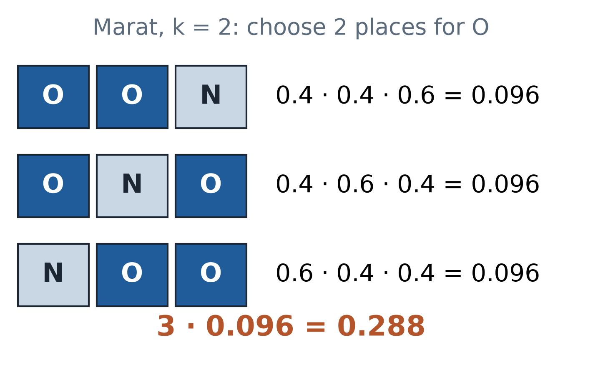
\(\binom32\cdot0.4^2\cdot0.6=0.288\), as in Ex 3.2.
Mean and variance of the binomial Thm 3.4
If \(X\sim\operatorname{Bin}(n,p)\), then \[\E[X]=np,\qquad \Var(X)=np(1-p).\]
Idea: \(X_j=1\) if trial \(j\) is a success, 0 if not. Each \(X_j\) is Bernoulli(\(p\)), \(X=X_1+\dots+X_n\). Lecture 6 proves that means add (variances too, for independent trials).
Marat, \(n=3\), \(p=0.4\): \(\E[X]=3\cdot0.4=\) 1.2, \(\Var(X)=3\cdot0.4\cdot0.6=\) 0.72
The same as Ex 3.4 and Ex 3.5, without the table.
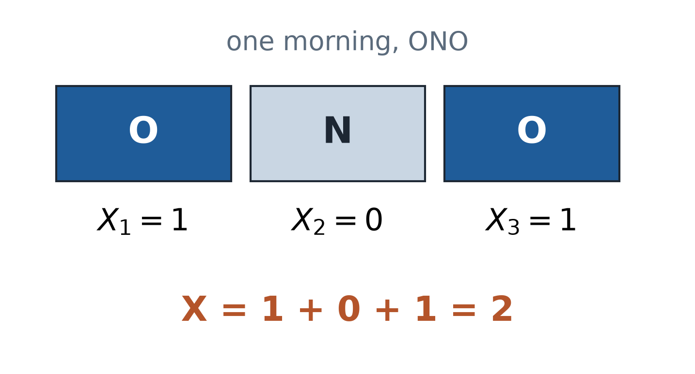
Your turn: binomial or not? Exercise 3
One word each, then one line of reason.
The number of heads in 6 tosses of a fair coin.
The number of faulty bulbs among 2 bulbs taken without putting back from a box of 12 that has 3 faulty ones.
The number of customers Marat tests until the first one orders.
Yes, \(\operatorname{Bin}(6,\,0.5)\).
No: after the first draw \(p\) changes to \(2/11\) or \(3/11\) (Lecture 2), so the trials are not independent.
No: the number of trials is not fixed (geometric distribution, Lecture 4).
Your turn: test drives in Kaliningrad Exercise 4
Each of 5 visitors to a car showroom in Kaliningrad books a test drive with probability 0.2, independently of the others. \(X\) is the number who book.
Find \(\Prob(X=2)\), \(\Prob(X\ge1)\), \(\E[X]\) and \(\Var(X)\).
\(X\sim\operatorname{Bin}(5,\,0.2)\). \(\Prob(X=2)=\binom52\cdot0.2^2\cdot0.8^3=10\cdot0.04\cdot0.512=\) 0.2048
\(\Prob(X\ge1)=1-\Prob(X=0)=1-0.8^5=1-0.32768\approx\) 0.672
\(\E[X]=5\cdot0.2=\) 1, \(\quad\Var(X)=5\cdot0.2\cdot0.8=\) 0.8

Probability Theory and Mathematical Statistics · HSE 2026/27